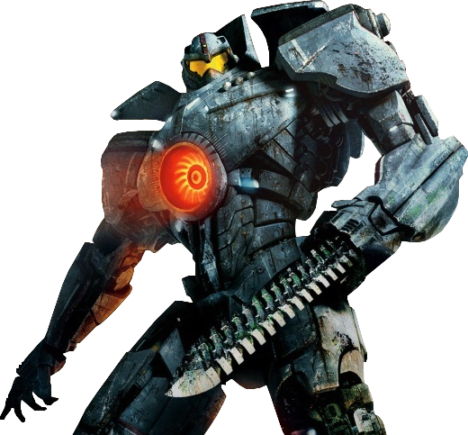
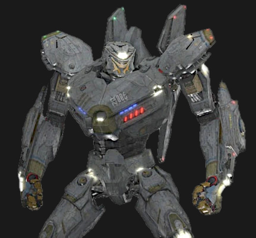

Híres Jaegerek
gispydanger
Gipsy Danger egy erőteljes, jól ismert Jaeger, amely a Kaijuk elleni harcok során az emberiség védelmezője volt.
Striker Eureka
Striker Eureka a világ legfejlettebb Jaegere, amely a legnagyobb erővel bír, és az Ausztráliát védő katonai szimbólum.